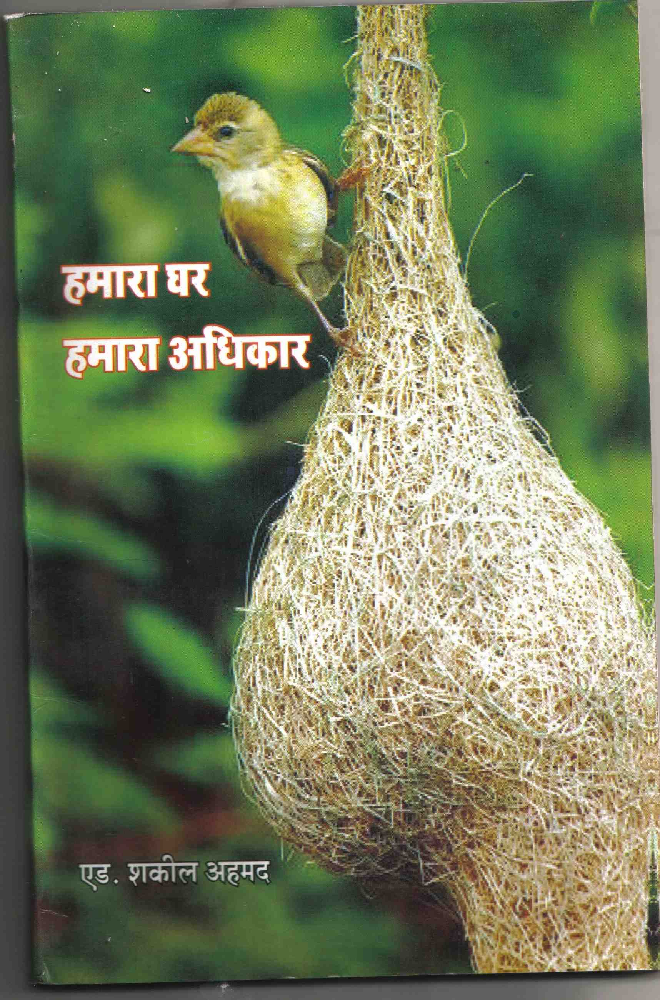

In 1995, the Maharashtra State Government passed the Slum Rehabilitation Act, under which slums that were protected could be converted to buildings and the builder would get additional building permit to build and sell apartments at market rate to recover costs and make profit. This act started to be manipulated by builders who started coercing and intimidating slum dwellers to accept their terms.
This book by Shakil in hindi, explains the Act to common people. For ordering copies, please contact Shakil at +91-9969925602
